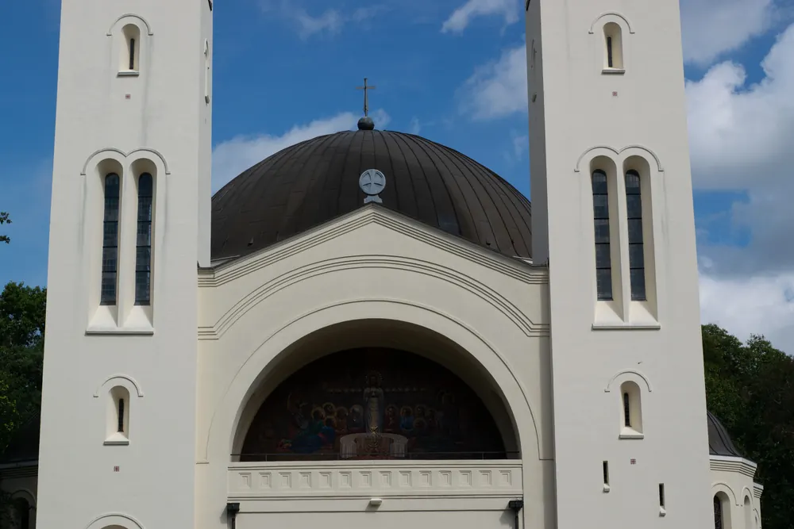

Bestemming bij Nijmegen
Berg en Dal
Een schilderachtige oase nabij Nijmegen met glooiende heuvels, historische bezienswaardigheden en adembenemende natuur. Ontdek het zelf!

Berg en Dal, gelegen nabij Nijmegen, is een ware parel van natuurlijke schoonheid en culturele rijkdom. Dit pittoreske dorp is genesteld tussen glooiende heuvels en weelderige bossen, waardoor het een favoriete bestemming is voor wandelaars en natuurliefhebbers. Vlakbij, in Groesbeek, vind je het Vrijheidsmuseum over de Tweede Wereldoorlog en de bevrijding van de regio. Het Afrika Museum in Berg en Dal is sinds 27 november 2023 gesloten. De Kabouterpaden zijn een hit bij gezinnen, terwijl de vele uitkijkpunten over de Ooijpolder en het Zevenheuvelenweg een adembenemend panorama bieden. Een bezoek aan Berg en Dal is een reis van ontdekking, zowel door de natuur als door de geschiedenis.
Restaurants in Berg en Dal
In Berg en Dal tref je een veelzijdigheid aan eetgelegenheden, van knusse eetcafés waar lokale lekkernijen de kaart sieren tot elegante restaurants met internationale gerechten. Of je nu zin hebt in een traditionele Hollandse pot, een Mediterraanse schotel of een Aziatische delicatesse, Berg en Dal voldoet aan elke culinaire wens. Te midden van het karakteristieke landschap vind je diverse terrassen waar je kunt genieten van een koud drankje of een ambachtelijke koffie. Met zijn uitnodigende ambiance en brede gastronomische aanbod weet Berg en Dal zowel bewoners als toeristen te betoveren.
Restaurants om te proberen
- De heeren van Berg en Dal
- Restaurant Berghof
- Puur Sahn Restaurant
- Restaurant Panorama (bij Fletcher)
- Pannenkoekenrestaurant De Duivelsberg
- Restaurant Villa
- Bistro Le Steak
Lees ook

Ontdek Nijmegen door de ogen van een local
Nijmegen is mijn favoriete stad in Nederland. De prachtige huizen, gezellige mensen en het historische stadscentrum: beter kan het niet. Als student…

3x een leuke Bed and Breakfast in Wijchen
De meest opvallende oude bezienswaardigheid in Wijchen is het centraal gelegen Kasteel van Wijchen, dat voor het eerst genoemd wordt in archiefstukken uit…

Op vakantie dichtbij huis: drie heerlijke vakantieparken vlakbij Nijmegen
Blijf je tijdens de vakantie graag dichtbij huis, maar wil je wel het gevoel hebben dat je er heerlijk tussenuit bent geweest? In de omgeving van Nijmegen…